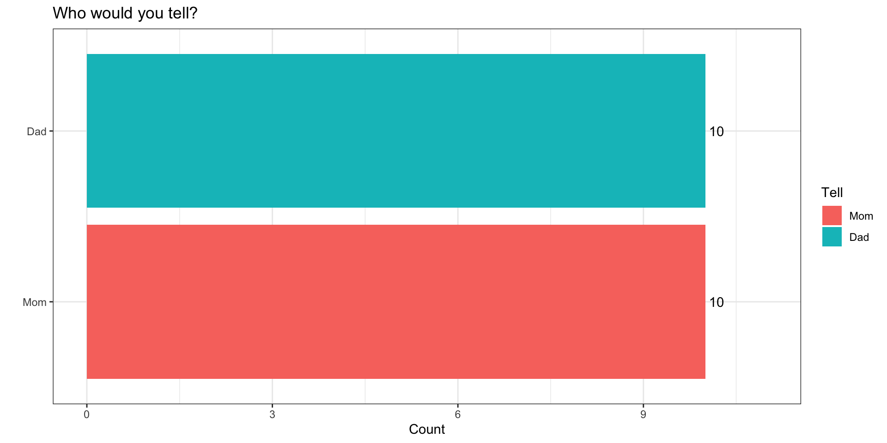
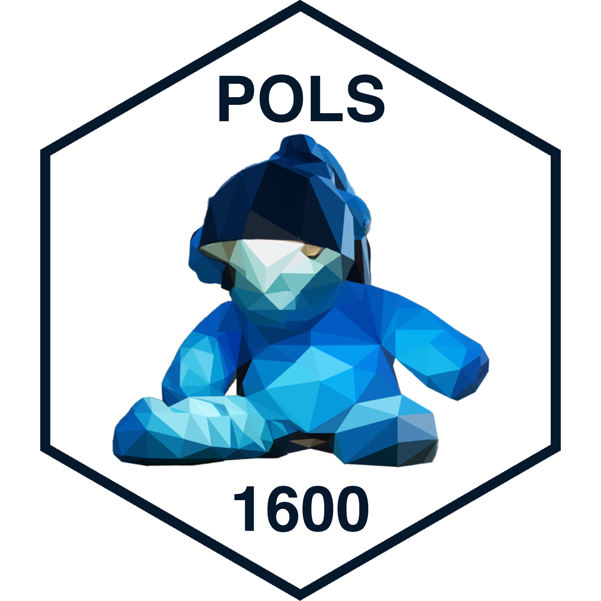

POLS 1600
Data and Measurement
Updated Jan 30, 2024
Overview
Class Plan
- Logistics (15 minutes)
- Announcements
- Feedback
- Class plan (60 minutes)
- Introduction to R, R Studio and Quarto
- Loading and Looking at Data in R
- Transforming, Recoding, and Cleaning Data in R
- Describing Data in R
- Exploring Covid-19 Data for Lab
Annoucements
If it’s your first time here you’ll need to work through Software Setup to follow along today
- Talk to me after class if you’re having installation issues
If you’re still on the waitlist on CAB, speak to me after class
Announcements
"Uh ohhh, the Cavs are playing playoff basketball" pic.twitter.com/WrOrzeuEtW
— Bottlegate ((Bottlegate?)) April 21, 2017
Tutorials
Once you’ve done the following
You can see the available problem sets by running the following code in your console:
Tutorials
And start a specific tutorial by running:
Please upload tutorials 00-intro and 01-measurement1 to Canvas by Friday
“”
You’ve committed a murder
Why
Why do you ask?
It’s cousin Nick’s fault…
Funny icebreaker, but lots of assumptions…
You’re not a murderer
You don’t know someone who’s committed a murder or been murdered
You’ve got a mom and dad
Why do you ask?
How might we make this question better?
- Use a screener question
- “Would you feel comfortable…”
- “Pipe” in responses from a prior question
- “Who are two people who raised you…”
- Use a screener question
What questions we ask and how we ask them matters
Hopes and Dreams, Fears and Worries
What are we excited about?
- Engaging with social science
- Learning statistics and math
- Learning to code
What are we worried about?
- Engaging with social science
- Learning statistics and math
- Learning to code
Introduction to R, R Studio and Quarto
Overview
R, R Studio and Quarto
Getting set up to work in R
Basic Programming in R
R, R Studio and Quarto
R is an open source statistical programming language (cheatsheet)
R Studio is an integrated development environment (IDE) that makes working in R much easier (cheatsheet)
Quarto is a publishing system that allows us to write and present code in different formats (cheatsheet)
General Tuesday Workflow
Go to class content for current week
Open slides in browser
Open R Studio
Create .qmd file titled
wk01-notes.qmdand save in course folderGet set up to work
Take notes and follow along
Let’s create a .qmd file
Three components of a .qmd
The Basics of R
R is an interpreter (>)
“Everything that exists in R is an object”
“Everything that happens in R is the result of a function”
Data come in different types, shapes and sizes
Packages make R great
R is an interpreter (>)
Enter commands line-by-line in the console
The
>means R is a ready for a commandThe
+means your last command isn’t complete- If you get stuck with a
+use your escape key!
- If you get stuck with a
Send code .qmd file to the console:
cntrl + Enter(PC) |cmd + Return(Mac) -> run current linecntrl + shift + Enter(PC) |cmd + shift + Return(Mac) -> run all code in current chunk
R is a Calculator
| Operator | Description | Usage |
|---|---|---|
| + | addition | x + y |
| - | subtraction | x - y |
| * | multiplication | x * y |
| / | division | x / y |
| ^ | raised to the power of | x ^ y |
| abs | absolute value | abs(x) |
| %/% | integer division | x %/% y |
| %% | remainder after division | x %% y |
R is logical
| Operator | Description | Usage |
|---|---|---|
| & | and | x & y |
| | | or | x | y |
| xor | exactly x or y | xor(x, y) |
| ! | not | !x |
R is logical
R can make comparisons
| Operator | Description | Usage |
|---|---|---|
| < | less than | x < y |
| <= | less than or equal to | x <= y |
| > | greater than | x > y |
| >= | greater than or equal to | x >= y |
| == | exactly equal to | x == y |
| != | not equal to | x != y |
| %in% | group membership* | x %in% y |
| is.na | is missing | is.na(x) |
| !is.na | is not missing | !is.na(x) |
Everything that exists in R is an object
Data come in different types

Data come in different types
Data come in different “shapes” and “sizes”

Source: Gaurav Tiwari
| Name | “Size” | Type of Data | R code |
|---|---|---|---|
| scalar | 1 | numeric, character, factor, logical | x <- 5 |
| vector | N elements: length(x) |
all the same | v <- c(1, 2, T, "false") |
| matrix | N rows by columns K: dim(x) |
all the same | m <- matrix(y,2,2) |
| array | N row by K column by J dimensions: dim(x) |
all the same | a <- array(m,c(2,2,3)) |
| data frames | N row by K column matrix | can be different | d <-data.frame(x=x, y=y) |
| tibbles | N row by K column matrix | can be different | d <-tibble(x=x, y=y) |
| lists | can vary | can be different | l <-list(x,y,m,a,d) |
Everything that happens in R is the result of a function
- You’ve already seen and used some R functions
- the
<-is the assignement operator that assigns a value to a name c()is the combine function that combines elements togetherinstall.packages()installs packageslibrary()loads packages you’ve installed so you can use functions and data that are part of that package
- the
Three sources of functions
Three sources of functions:
base R
<-; mean(x); library("package_name")packages
remotes::intall_github("user/repository")You
my_function <- function(x){x^2}
Functions are like recipes
They have:
names
ingredients (inputs)
steps that tell you what to do with the ingredients (statements/code)
tasty results from applying those steps to given ingredients (outputs)

Can I kick it?
can_x_kick_it <- function(x){
# Determine if x can kick it
# If x in A Tribe Called Quest
if(x %in% c("Q-Tip","Phife Dawg",
"Ali Shaheed Muhammad",
"Jarobi White")){
return("Yes you can")
}else{
return("Before this, did you really know what live was?")
}
}
can_x_kick_it("Q-Tip")[1] "Yes you can"[1] "Before this, did you really know what live was?"Getting setup to work in R
Each time you start a project in R, you will want to:
Set your working directory
Load (and if needed, install) the R packages you will use
Set any “global” options you want
Load the data you’ll be using
Set your working directory

Load (and if needed, install) the R packages you will use
Install packages once1 with
install.packages("package_name")Load packages every session with
library("package_name")
Install packages for the lab
Install packages for the lab
Let’s install the tidyverse and COVID19.
- Create a new code chunk
- Label it
libraries - Copy and paste the following into your console
- Once you’ve installed these packages comment out the code
Keyboard Shortcuts to toggle # comments
macOS: CMD + SHIFT + C
PC: CTRL + SHIFT + C
Loading the tidyverse and COVID19 packages
- Type the following into your code chunk:
Set any “global” options you want
Here are the global options for these slides:1
# Options for these slides
knitr::opts_chunk$set(
warning = FALSE, # Don't display warnings
message = FALSE, # Don't display messages
comment = NA, # No prefix before line of text
dpi = 300, # Figure resolution
fig.align = "center", # Figure alignment
out.width = "80%", # Figure width
cache = FALSE # Don't cache code chunks
)Load the data you’ll be using
There are three ways to load data.
- Load a pre-existing dataset
data("dataset")will load the dataset named “dataset”data()will list all datasets
- Load a .Rdata/.rda file using
load("dataset.rda") - Read data of a different format (.csv, .dta, .spss) into R using specific functions from packages like
havenandreadr
Working with Data in R
Overview: Working with Data in R
Loading data into R
Looking at your data
Cleaning and transforming your data
Loading data into R
There are three ways to load data.
- Load a pre-existing dataset
data("dataset")will load the dataset named “dataset”data()will list all datasets- Useful for tutorials, working through examples/help
- Load a .Rdata/.rda file using
load("dataset.rda") - Read data of a different format (.csv, .dta, .spss) into R using specific functions
- We will use functions from the
havenandreadrpackages to read data from the web and stored locally on your computer
- We will use functions from the
Loading state-level Covid data
Loading state-level Covid data
The code below downloads two years of daily state-level Covid data:
Please run the following1
Loading state-level Covid data
country = UStells the function we want data for the USstart = "2020-01-01"sets the start date for the datastart = "2020-01-01"sets the end date for the datalevel = 2tells the function we want state-level dataverbose = Ftells the function not to print other stuff
Looking at your data
Anytime you load data into R, try some combination of the following to get a high-level overview (HLO) of the data
dim(data)gives you the dimensions (# of rows and columns)View(data)opens data in a separate paneprint(data); datawill display a truncated view of data in your consoleglimpse(data)will show a transposed (switch columns and rows) version of data with information on variable typehead(data)shows you the first 5 rowstail(data)shows you the last 5 rowsglimpse(data)data$variableextractsvariablefromdatatable(data$variable)creates a frequency table- Good for categorical data
summary(data$variable)summary statistics- Good for numeric data
HLOs allow you to
- Describe the structure of your data:
- How many observations (rows)
- How many variables (columns)
- Describe the unit of analysis
- What does a row in your data correspond to
- Identify the class and type of variables (columns)
- Numeric, categorical, logical
- Is there missing data (
NAs)
- Figure out what transformations, cleaning, and recoding you need to do
Data Wrangling in the Tidyverse
The Tidyverse
The tidyverse is an opinionated collection of R packages designed for data science. All packages share an underlying design philosophy, grammar, and data structures.
For more check out R for Data Science

Tidy Data
Tidy data is a standard way of mapping the meaning of a dataset to its structure.
A dataset is messy or tidy depending on how rows, columns and tables are matched up with observations, variables and types. In tidy data:
Every column is a variable.
Every row is an observation.
Every cell is a single value.
dplyr functions for data wrangling
Today and this week will begin learning some tools for selecting and transforming data:
select()to select columns from a dataframefilter()to select rows from a dataframe when some statement isTRUEmutate()to create new columscase_when()to recode values when some statement isTRUE
summarise()to transform many values into one valuegroup_by()to create a grouped table so that other functions are applied separately to each group and then combined
The %>% (“pipe” operator)
The %>% lets us chain functions together so we can read left to right
Becomes
Keyboard Shortcuts for %>%
macOS: CMD + SHIFT + M
PC: CTRL + SHIFT + M
Describing Data in R
Descriptive Statistics
When social scientists talk about descriptive inference, we’re trying to summarize our data and make claims about what’s typical of our data
- What’s a typical value
- Measures of central tendency
- mean, median, mode
- How do our data vary around typical values
- Measures of dispersion
- variance, standard deviation, range, percentile ranges
- How does variation in one variable relate to variation in another
- Measures of association
- covariance, correlation
Using R to Summarize Data
Here are some common ways of summarizing data and how to calculate them with R
| Description | Usage |
|---|---|
| sum | sum(x) |
| minimum | min(x) |
| maximum | max(x) |
| range | range(x) |
| mean | mean(x) |
| median | median(x) |
| percentile | quantile(x) |
| variance | var(x) |
| standard deviation | sd(x) |
| rank | rank(x) |
All of these functions have an argument called na.rm=F. If your data have missing values, you’ll need to set na.rm=F (e.g. mean(x, na.rm=T))
Exploring Covid-19 Data for Lab
Exploring Covid-19 Data for Lab
Let’s spend the rest of class, exploring what seems like a simple question
On average, did states that adopted mask mandates have lower rates of new cases?
Tasks
Get a high level overview of our data
Subset the data to just U.S. States
Recode our data to get a measure of new Covid cases and what face mask policy policy was in place
Summarize the average number of new cases by face mask policy.
1. Get a high level overview of our data
- Create a new chunk
- Label it
#| label:"HLO" - Run the following code
- Comment code with
#
Answer the following
- How many observations are there (rows)
- How many variables (columns)
- What’s the unit of analysis?
- In words, how would you describe what a row in your data set corresponds to?
- Are there any missing values for
confirmed - What range of values can
facial_coveringstake?1
Subsetting our data to only U.S. States
Goal: Subset our Covid data to include only the 50 states + DC
Steps:
Create a vector of the territories we don’t want
Use the
filter()command to “filter” out these territories
1. Create a vector of the territories we don’t want
2. Use the filter() command to “filter” out these territories
Creating new variables for analysis
Goal: We need new variables that describe:
the number of new Covid-19 cases on a given date
the face mask policy in place
Steps:
Use
mutate(),group_by()andlag()to calculatenew_casesfrom totalconfirmedcasesUse
mutate(),case_when()andabs()to turn numericfacial_coveringsinto categorical factor variable
Calculate new Covid-19 cases
Please run and comment the following code:
Create Face Mask Policy variable
covid_us %>%
mutate(
face_masks = case_when(
facial_coverings == 0 ~ "No policy",
abs(facial_coverings) == 1 ~ "Recommended",
abs(facial_coverings) == 2 ~ "Some requirements",
abs(facial_coverings) == 3 ~ "Required shared places",
abs(facial_coverings) == 4 ~ "Required all times",
)
) -> covid_us
levels(factor(covid_us$face_masks))[1] "No policy" "Recommended" "Required all times"
[4] "Required shared places" "Some requirements" Make face_masks a factor to reflect order of policies
[1] "No policy" "Recommended" "Required all times"
[4] "Required shared places" "Some requirements" covid_us %>%
mutate(
face_masks = factor(
face_masks,
levels = c(
"No policy",
"Recommended",
"Some requirements",
"Required shared places",
"Required all times"
)
)
) -> covid_us
levels(covid_us$face_masks)[1] "No policy" "Recommended" "Some requirements"
[4] "Required shared places" "Required all times" Calculate the Average Number of Covid-19 cases by Face Mask Policy
Goal: On average, did states that adopted mask mandates have lower rates of new cases?
Steps: use
filter(),group_by()andsummarise()andmean()to calculate the average number of cases for each level of theface_maskspolicy variable
Face Masks and New Covid-19 Cases (per 100k)
Face Masks and New Covid-19 Cases (per 100k)
What should we conclude?
What’s wrong with this simple comparison?
What’s a better comparison? (Thursday)
| Face Mask Policy | Average No. of New Cases |
|---|---|
| No policy | 10.26 |
| Recommended | 16.61 |
| Some requirements | 36.18 |
| Required shared places | 29.38 |
| Required all times | 32.18 |
Commented Code
# ---- Libraries ----
## Uncomment to install
# install.packages("tidyverse")
# install.packages("COVID19")
library("tidyverse")
library("COVID19")
# ---- Load data ----
load(url("https://pols1600.paultesta.org/files/data/covid.rda"))
# ---- Subset to US states and DC ----
territories <- c(
"American Samoa",
"Guam",
"Northern Mariana Islands",
"Puerto Rico",
"Virgin Islands"
)
covid_us <- covid %>%
filter(!administrative_area_level_2 %in% territories )
## Check subsetting
dim(covid)[1] > dim(covid_us)[1]
# ---- Recode covid_us ----
covid_us %>%
mutate(
state = administrative_area_level_2,
) %>%
dplyr::group_by(state) %>%
mutate(
new_cases = confirmed - lag(confirmed),
new_cases_pc = new_cases/population *100000
) %>%
mutate(
face_masks = case_when(
facial_coverings == 0 ~ "No policy",
abs(facial_coverings) == 1 ~ "Recommended",
abs(facial_coverings) == 2 ~ "Some requirements",
abs(facial_coverings) == 3 ~ "Required shared places",
abs(facial_coverings) == 4 ~ "Required all times"
)
) %>%
mutate(
face_masks = factor(
face_masks,
levels = c(
"No policy",
"Recommended",
"Some requirements",
"Required shared places",
"Required all times"
)
)
)-> covid_us
# ---- Calculate new cases per capita by facemask policy
covid_us %>%
filter(!is.na(face_masks))%>%
group_by(face_masks)%>%
summarize(
`Average No. of New Cases` = round(mean(new_cases_pc, na.rm=T),2)
)%>%
rename(
"Face Mask Policy" = face_masks
) -> face_mask_summary
face_mask_summarySummary
Summary
After today, you should have a better sense of
How to write R code using Quarto and R Markdown
How to install packages and load libraries
Some of different types and shapes of data
How to get a high level overview of your data
How to transform, recode, and summarise data using
dplyrand thetidyverseHow describe typical values and variation in data
How to explore substantive questions using these these typical values
Congrats!
We covered A LOT
It’s OK to feel overwhelmed
- But please don’t suffer in silence
Don’t worry if everything didn’t make sense.
- Eventually it will, but this takes time and practice
- Testa’s 50-50 rule

POLS 1600